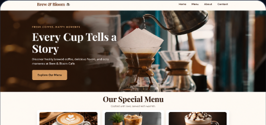
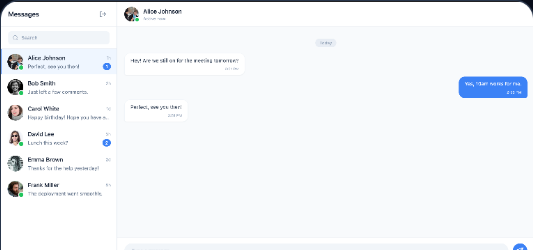
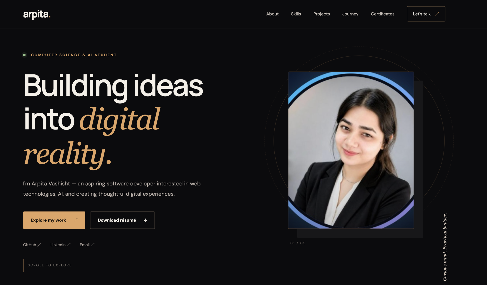
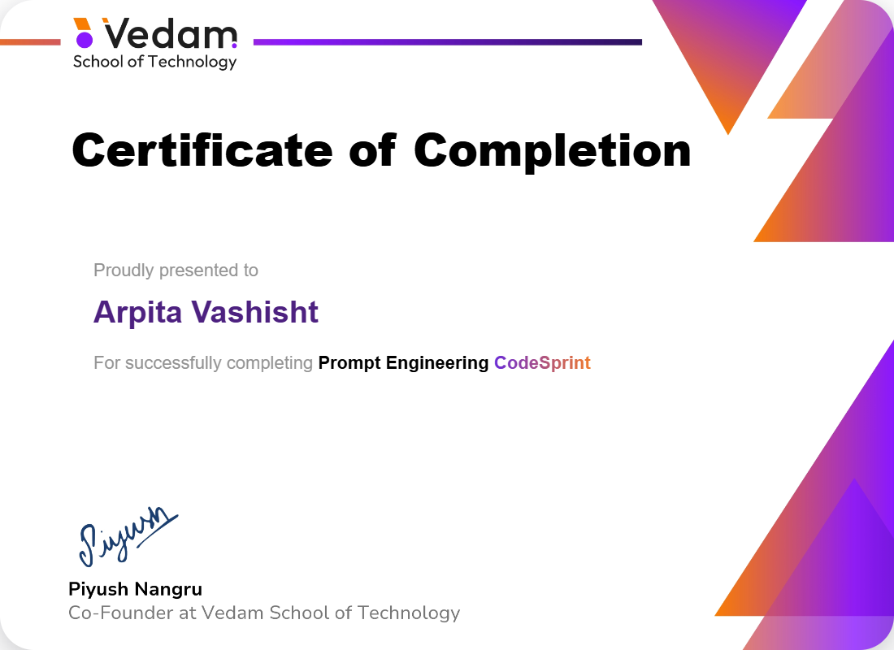
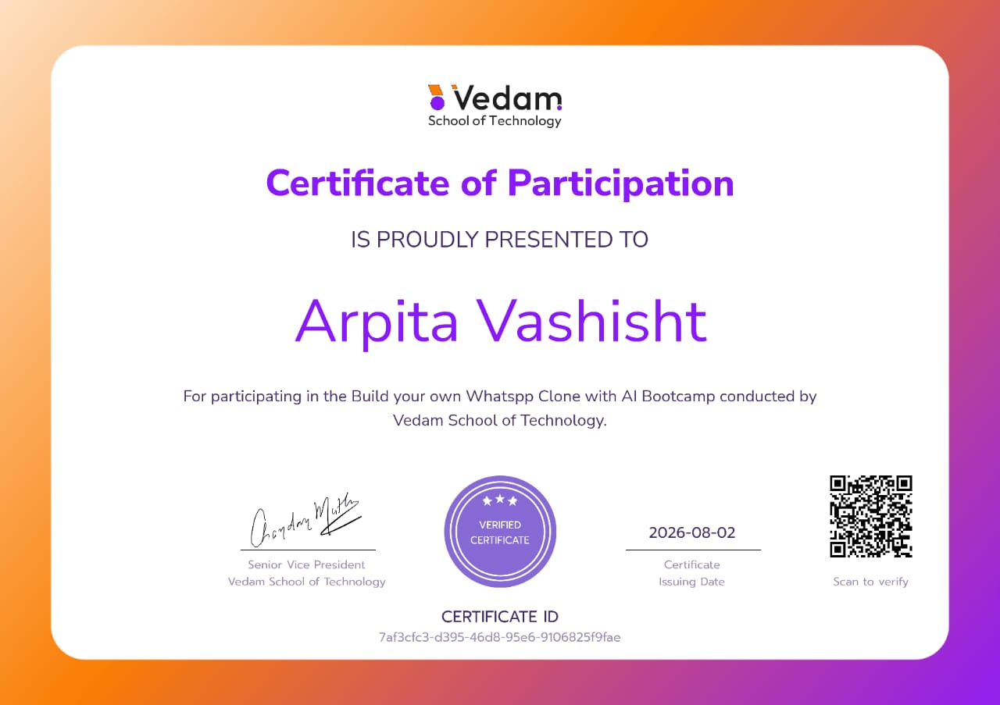

</>
HTML & CSS
Semantic structure, responsive layouts, and styling interfaces.
WEB FOUNDATIONSCOMPUTER SCIENCE & AI STUDENT
I'm Arpita Vashisht — an aspiring software developer interested in web technologies, AI, and creating thoughtful digital experiences.
I'm pursuing a B.Tech in Computer Science and Artificial Intelligence at Vedam School of Technology, Sushant University. I enjoy turning ideas into working interfaces, learning how software is built, and exploring where AI can make technology more useful.
I'm at the beginning of my engineering journey, building a strong foundation through hands-on projects, collaboration, and continuous learning. I'm open to internships and opportunities where I can contribute, learn, and grow.
More about my journey ↗Tools I'm working with and strengthening through practice.
Semantic structure, responsive layouts, and styling interfaces.
WEB FOUNDATIONSProgramming fundamentals, logic building, and problem solving.
PROGRAMMINGLearning interactive web experiences and core language concepts.
IN PROGRESSFrontend project exposure and component-based interfaces.
PROJECT EXPERIENCERepositories, version control basics, and project documentation.
DEVELOPMENT WORKFLOWExploring AI tools and prompt engineering for practical workflows.
EXPLORATIONA few projects that reflect what I've been learning by doing.

↗A responsive café website with a welcoming homepage, menu, About, and Contact sections.

↗A messaging prototype with a chat-focused interface and sample conversations, built as a hands-on project.

↗A responsive personal website bringing together my work, skills, learning journey, and professional links.
Vedam School of Technology, Sushant University
Foundational learning in web development, coding basics, and prompt engineering.
Exploring cloud concepts through introductory hands-on labs and guided learning.
View learning profile ↗Team coordination, technical activities, project presentations, and collaborative problem-solving.
A growing collection of learning milestones and credentials.
CodeSprint · Certificate of Completion

02CodeSprint · Certificate of Completion
CodeSprint · Certificate of Completion

04Vedam School of Technology · Certificate of Participation · 2 Aug 2026
Select any certificate preview to view the full-size image.
Browse my code, projects, and professional updates.
I'm open to internships, collaborations, and opportunities to learn by building.
Get in touch ↗